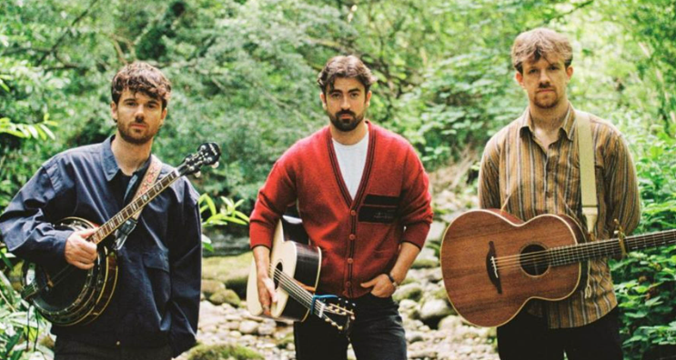
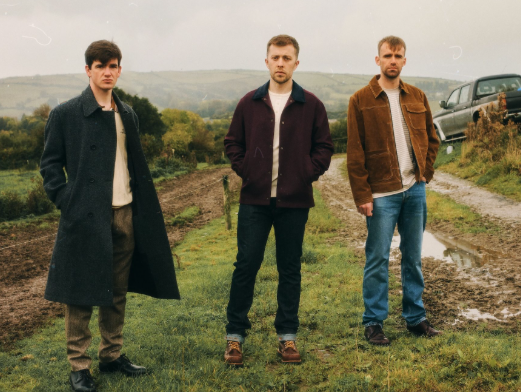
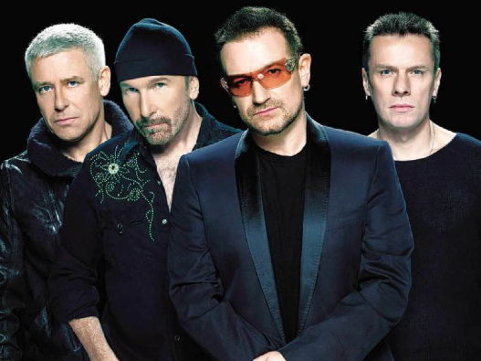

Learn about some of the most influential Irish artists, both past and present.
Amble

Amble are an Irish folk trio made up of Robbie Cunningham, Ross McNerney and Oisin McCaffrey. The band formed in late 2022 and have quickly become one of the better-known new names in Irish folk music. Their songs are known for storytelling, acoustic instruments and strong harmonies. Some of their best-known songs include Mariner Boy, Lonely Island and Schoolyard Days.
Kingfishr

Kingfishr are an Irish indie-folk band made up of Eddie Keogh, Eoghan McGrath and Eoin Fitzgibbon. The three members met while studying engineering at the University of Limerick and began making music together around 2022. Their music combines folk and indie influences with strong vocals and acoustic instruments. They became widely known after the success of Killeagh, which reached number one in Ireland.
The Script
The Script are an Irish pop rock band who formed in Dublin in 2001. The band originally consisted of Danny O'Donoghue, Mark Sheehan and Glen Power. They became internationally successful with songs such as The Man Who Can't Be Moved, Breakeven and Hall of Fame. Their music often combines pop and rock with emotional lyrics, and they have built a large international fanbase.
U2

U2 are an Irish rock band from Dublin and are one of the most successful bands to come from Ireland. The band formed in 1976 and consists of Bono, The Edge, Adam Clayton and Larry Mullen Jr. They became internationally famous with albums such as The Joshua Tree and songs including With or Without You, One and Beautiful Day. U2 are also well known for their huge live performances and charity work.
The Cranberries
The Cranberries were an Irish rock band from Limerick, formed in 1989. They became internationally successful during the 1990s, with songs such as Linger, Dreams and Zombie. The band's music was strongly associated with Dolores O'Riordan's distinctive voice, alongside the guitar-based sound of the group. They became one of Ireland's best-known alternative rock bands.